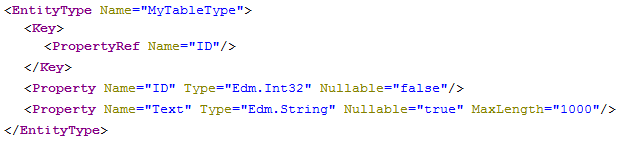
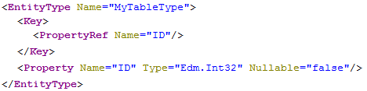

If the object you want to expose with an OData service has more columns than you actually want to expose, you can use SQL views to restrict the number of selected columns in the SELECT.
Nevertheless, SQL views are sometimes not appropriate, for example with calculation views, and for these cases we provide the possibility to restrict the properties in the OData service definition in two ways. By providing an including or an excluding list of columns.
You can specify the columns of an object that have to be exposed in the OData service by using the with keyword. Key fields of tables must not be omitted.
service {
"sample.odata::table" as "MyTable" with ("ID","Text");
} The resulting EntityType then contains only the properties derived from the specified columns:
http://<myHANAServer>:<port>/odata/services/<myService>.xsodata/$metadata
The opposite of the with keyword is the without keyword, which enables you to specify which columns you do NOT want to expose in the OData service:
service {
"sample.odata::table" as "MyTable" without ("Text","Time");
} The generated EntityType then does NOT contain the properties derived from the specified columns:
http://<myHANAServer>:<port>/odata/services/<myService>.xsodata/$metadata
